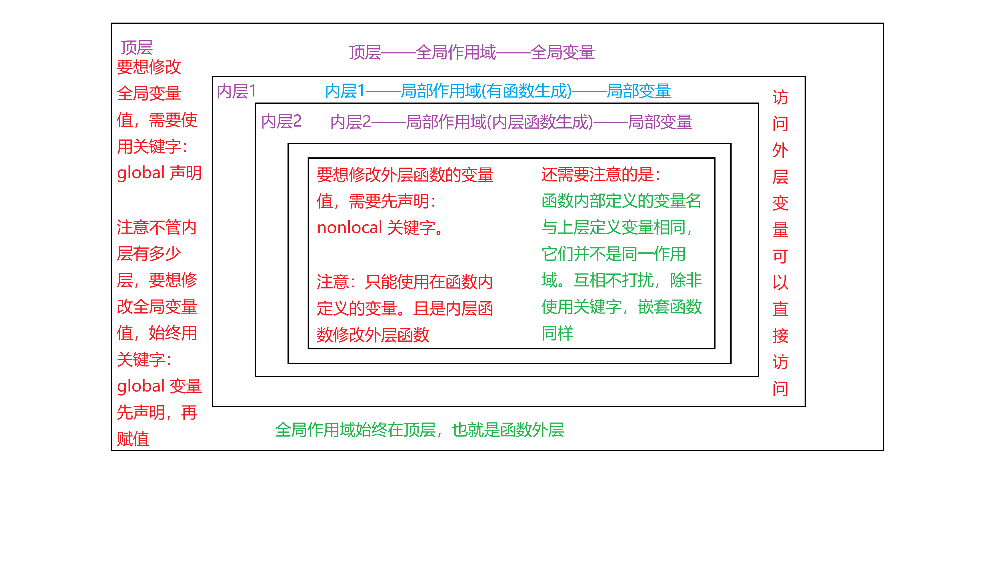
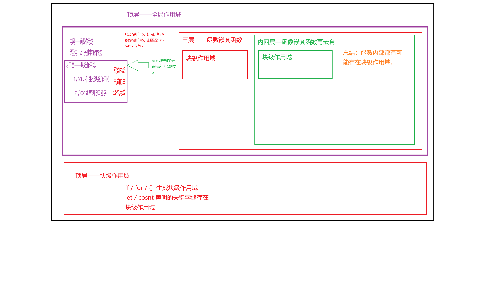

变量作用域
- 变量的作用域指的是：变量的作用范围(标识这个变量在哪里可以使用，在哪里不能使用)
- 说白了，就是变量的存活周期
-
-
全局作用域
- 全局作用域也叫：全局变量
- 全局变量：在函数之外定义的变量，称之为全局变量
- 特点：存活周期：整个文件(包括函数内)都可以使用(全局变量始终在顶层)
-
局部作用域
- 局部作用域也叫：局部变量
- 局部变量：在函数内部定义的变量，称之为局部变量
- 特点：存活周期：只在函数才能使用的变量
-
注意
- 变量有严格的作用域划分
- 局部变量，外部绝对无法访问
-
函数访问变量的坑
- 函数内部，可以访问，全局变量，正常情况只是能访问，不能修改
-
函数修改外部变量的方法
- 修改全局变量：使用关键字：
global
x = 10
def num():
global x
x = 20
num()
print(x) # 最后结果为 20-
内层函数修改外层函数变量的局部变量：使用关键字：
nonlocal -
def num1():
x = 50
def nun2():
nonlocal x
x = 30
num2()
print(x)
num1() 最后的输出结果是 30
- 修改全局变量：使用关键字：
-
自己画的
python作用域
注意：1.全局作用域可以有多个函数作用域
2.每个函数作用域都有嵌套的多个函数作用域 -
自己画的
JavaScript作用域
注意：1.全局作用域可以有多个函数作用域
2.每个函数作用域都有嵌套的多个函数作用域
3.每个函数作用域都可能出现块级作用域
4.全局作用域只有一个块级作用域
5.块级作用域内可以有函数作用域、块级作用域
-
作用域核心对比 |
|||
|---|---|---|---|
| 对比维度 | JavaScript | Python | 核心差异 |
| 作用域类型 |
|
|
JS 有块级作用域（let/const），Python 没有块级作用域
|
| 变量提升 |
|
|
JS 有变量提升（尤其是 var 和函数声明），Python 完全没有
|
| 全局变量修改 |
|
|
JS 修改全局变量无需关键字（但需注意重新声明会遮蔽），Python 必须用 global
|
| 闭包中修改外层变量 |
|
|
Python 修改外层变量必须用 nonlocal，JS 无需关键字（但要避免遮蔽）
|
| 局部变量外部访问 |
|
|
两者局部变量外部都无法直接访问，但都有间接方式传递数据 |
| 变量查找顺序 |
|
|
Python 明确规定了 LEGB 顺序，JS 则是隐式的作用域链，但本质相同 |
块级作用域（if / for） |
|
|
JS 有块级作用域（let/const），Python 完全没有
|
| 严格模式 |
|
|
JS 需要 "use strict" 来避免隐式全局，Python 天生如此
|
| 全局对象 |
|
|
JS 有明确的全局对象（window/global），Python 无类似概念
|
🎯 一句话总结 |
|
|---|---|
| JavaScript |
作用域灵活，有块级作用域和变量提升，修改外层变量无需关键字，但需小心 var 的遮蔽和提升陷阱。
|
| Python |
作用域严格，无块级作用域和变量提升，修改全局变量需 global，修改外层函数变量需 nonlocal，规则明确，不易出错。
|
| 核心差异 | JS 更灵活（但坑多），Python 更严谨（但规则清晰）。两者闭包机制相似，但修改外层变量的方式完全不同。 |